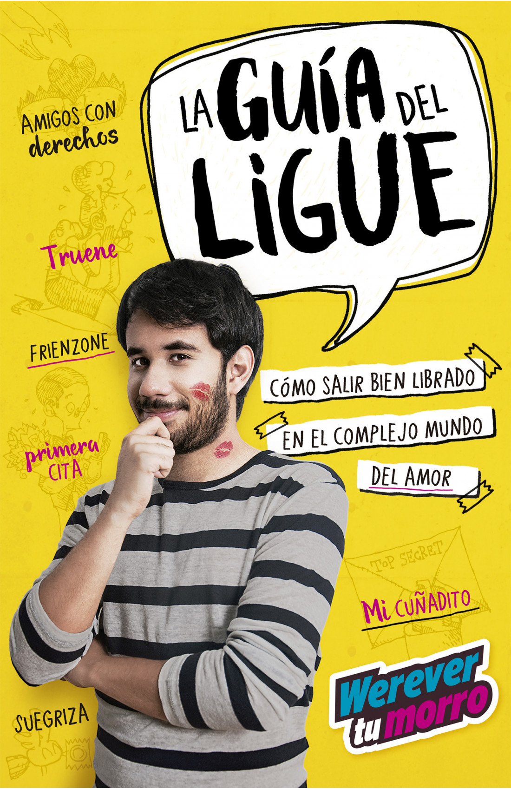

La Guía del Ligue
Por Werevertumorro

La guía del ligue de Werevertumorro es un libro de consejos sobre el arte de salir bien librado en el complicado mundo del amor ♥
Primeros capítulos
- Introducción
- ¿Qué es el ligue?
- Primera Cita
- Superar un rechazo
- Friendzone
- Truene
Derechos reservados © por Manuel Martinez Tirado